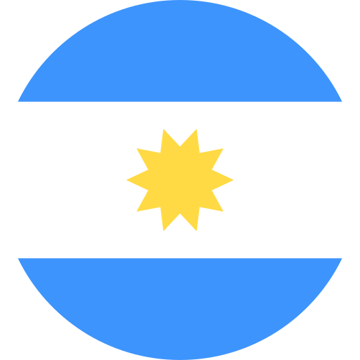
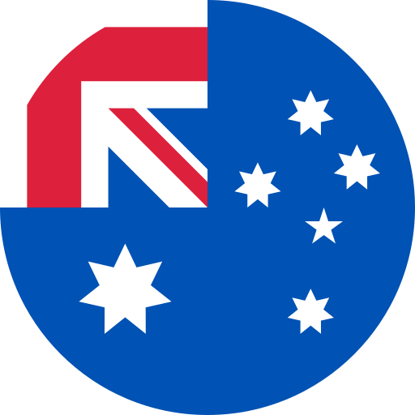
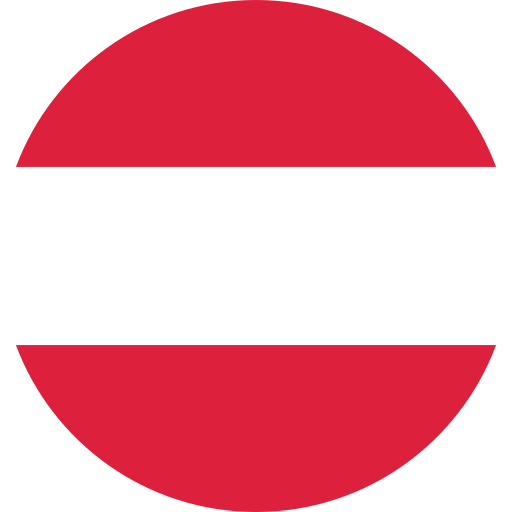
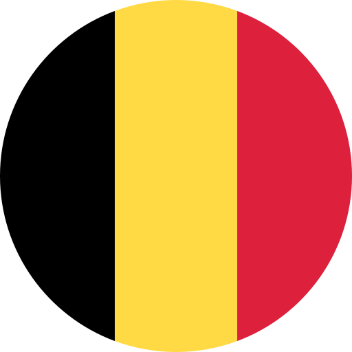
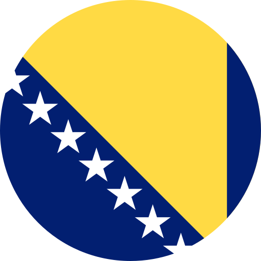
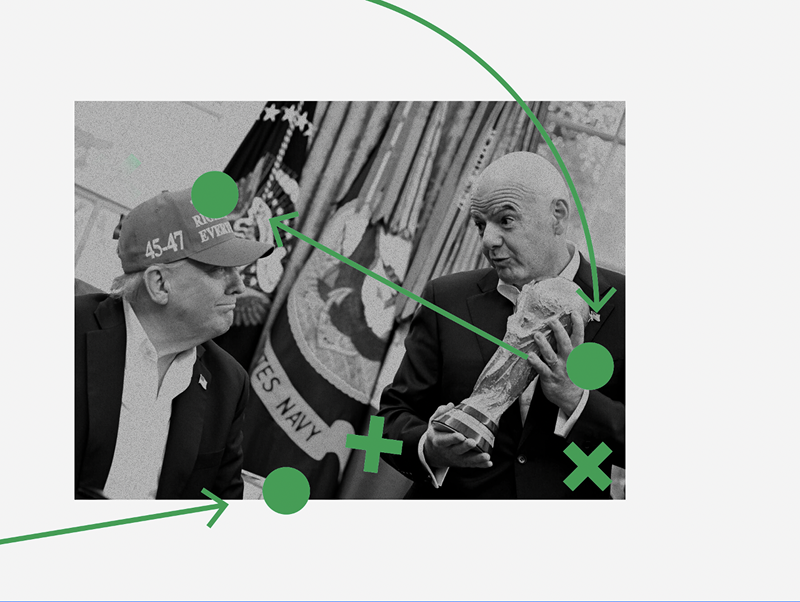
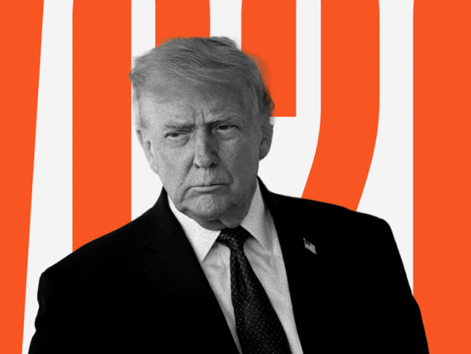
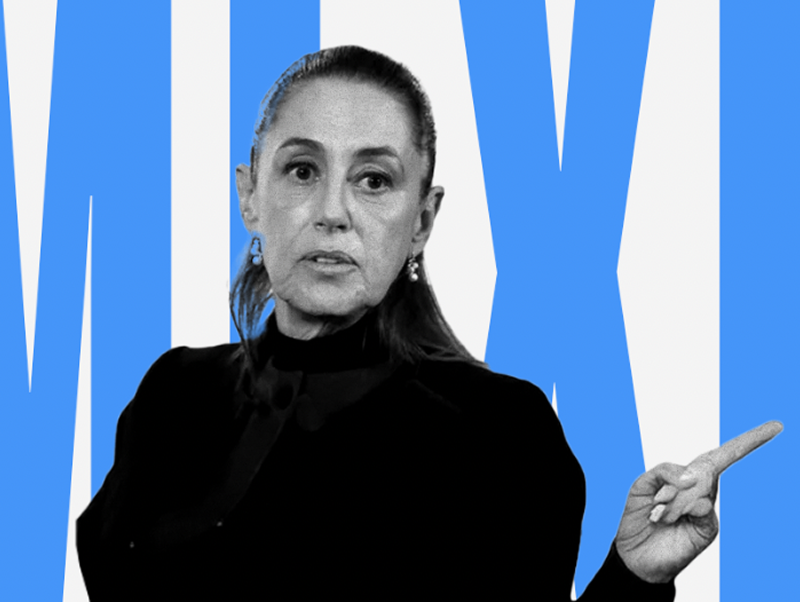

La Coupe du monde 2026 sera-t-elle la plus controversée de l'histoire ?
En bref : oui. Mais, comme le montre notre premier bulletin quotidien, c'est un peu plus compliqué.
Après le Qatar et la Russie de Poutine, c’est au tour des États-Unis de Donald Trump d’accueillir une coupe du monde éminemment géopolitique, aux côtés du Canada et du Mexique, deux pays que le président américain menace depuis son retour à la Maison-Blanche.
Cette édition sera d’une ampleur géographique inédite. Gianni Infantino, président de la FIFA et chambellan du néo-royalisme, a fait de cette Coupe du monde la première à 48 équipes : 1 248 joueurs s’affronteront lors de 104 matchs, de l’ouverture de ce soir, le 11 juin, jusqu’à la finale, le 19 juillet.
Que vous soyez un supporter passionné ou indifférent au football, nous vous proposons de suivre cet événement géopolitique à la manière du Grand Continent, grâce à un dispositif inédit : un observatoire analysant chaque équipe, un simulateur permettant de tester vos hypothèses, de la phase de groupes à celle par élimination — en passant par des matchs potentiellement explosifs comme États-Unis-Iran, qui pourrait être le premier match de l’histoire de la compétition entre deux pays en guerre ; des analyses quotidiennes et des approfondissements.
Avec la Coupe du monde, nous assisterons au spectacle global d’un monde cassé. Nous vous proposons d’en étudier les tendances profondes, de poser de nouvelles questions et de saisir les transformations d’une culture planétaire qui converge à un moment de disruption profonde.

Championne du monde en titre, l’Albiceleste de Lionel Messi débarque avec le statut de favorite et l’envie de conserver son trophée.
Voir plus1,12 MdValeur de l’équipe

Habitués des phases finales, les Socceroos visent les huitièmes après un parcours de qualification asiatique appliqué et maîtrisé.
Voir plus92,4 MValeur de l’équipe

De retour au Mondial après une longue absence, l’Autriche s’appuie sur un bloc discipliné et un entrejeu de qualité européenne.
Voir plus348,0 MValeur de l’équipe

La dernière danse d’une génération dorée : les Diables rouges veulent enfin transformer un immense potentiel en titre majeur.
Voir plus612,5 MValeur de l’équipe

Portée par ses cadres offensifs et un public bouillant, la Bosnie retrouve la Coupe du monde avec l’ambition de surprendre.
Voir plus184,7 MValeur de l’équipe
En bref : oui. Mais, comme le montre notre premier bulletin quotidien, c'est un peu plus compliqué.
Quel est le point commun entre MBS, Poutine, Trump, Platini et Kylian Mbappé ?

Le trophée présenté à la Maison-Blanche : récit d'une diplomatie du ballon très personnelle.

La Coupe du monde débute ce soir pour les États-Unis, avec des attentes plutôt élevées.

Pour le pays co-hôte, le tournoi est une vitrine diplomatique autant qu'un test de sécurité.